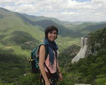
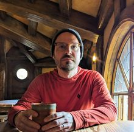
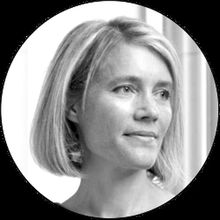
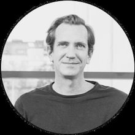
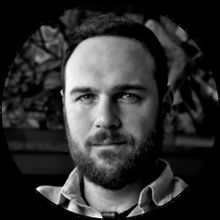
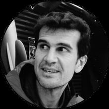

2026
Zaragoza, Spain
17th edition


2025
Fortaleza, Brazil
16th edition
2024
Exeter, United Kingdom
15th edition
2023
Aveiro, Portugal
14th edition
2022
Online
13th edition
2021
Online
12th edition
2020
Exeter, United Kingdom
(canceled due to COVID-19)
11th edition

2019
Tarragona, Spain
10th edition
2018
Boston, USA
9th edition

2017
Dubrovnik, Croatia
8th edition

2016
Dijon, France
7th edition
2015
New York, USA
6th edition
2014
Bologna, Italy
5th edition
2013
Berlin, Germany
4th edition


2012
Melbourne, Florida, USA
3rd edition
2010
Rio de Janeiro, Brazil
2nd edition
2009
Catania, Italy
1st edition